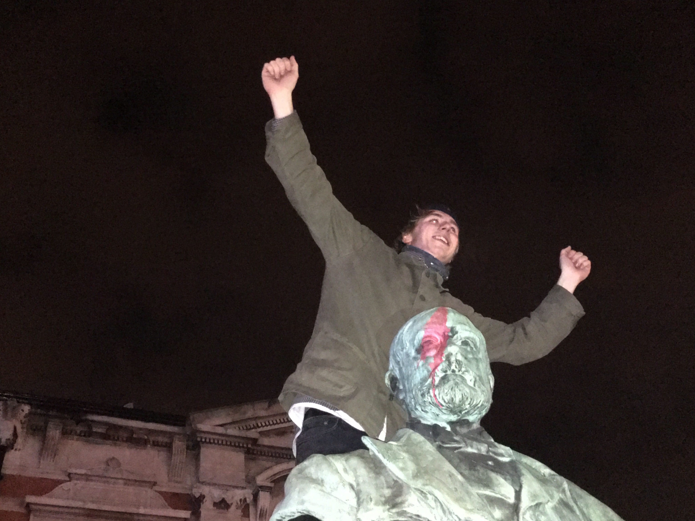
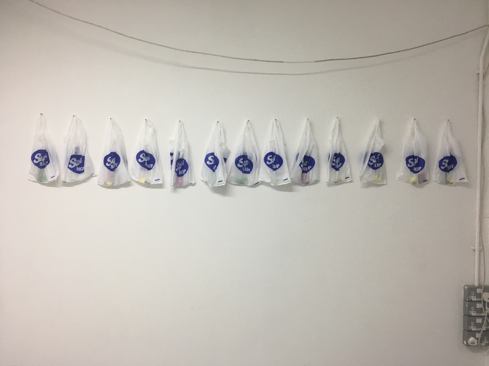
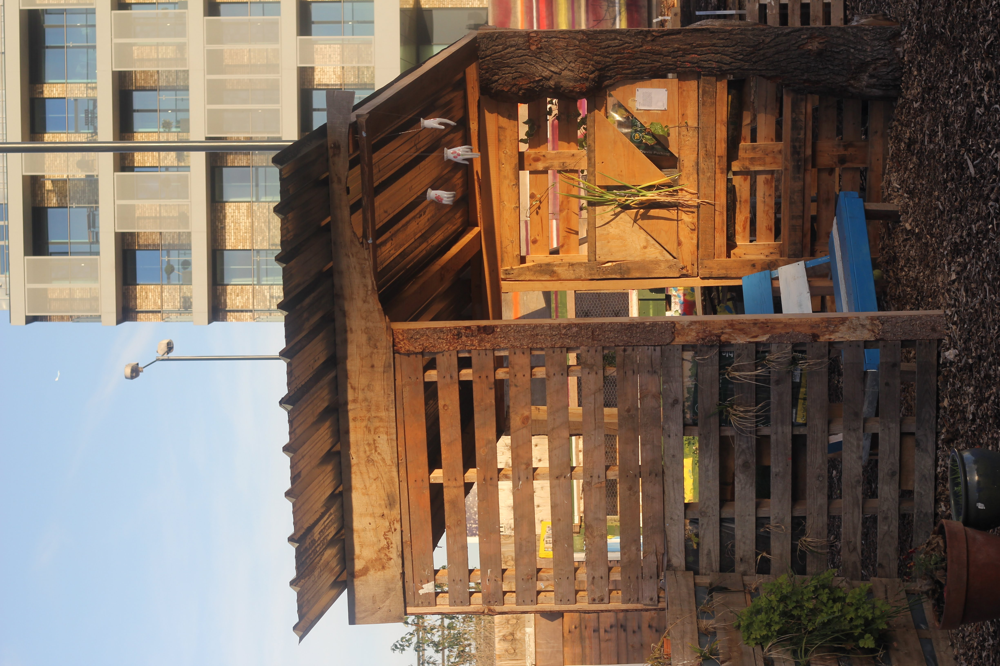
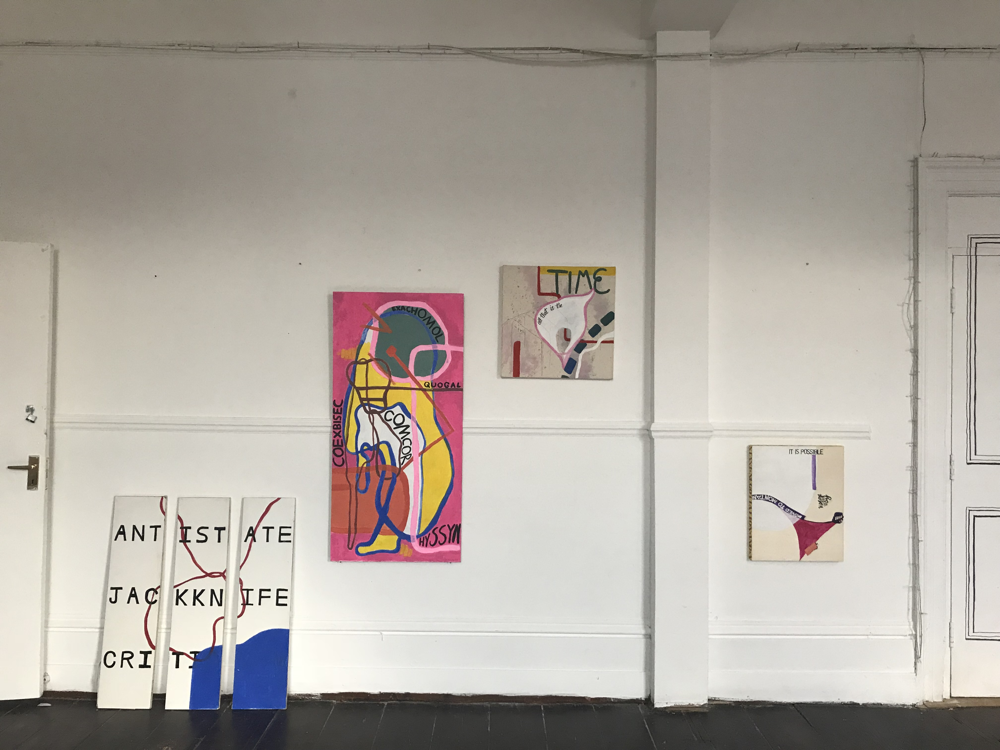
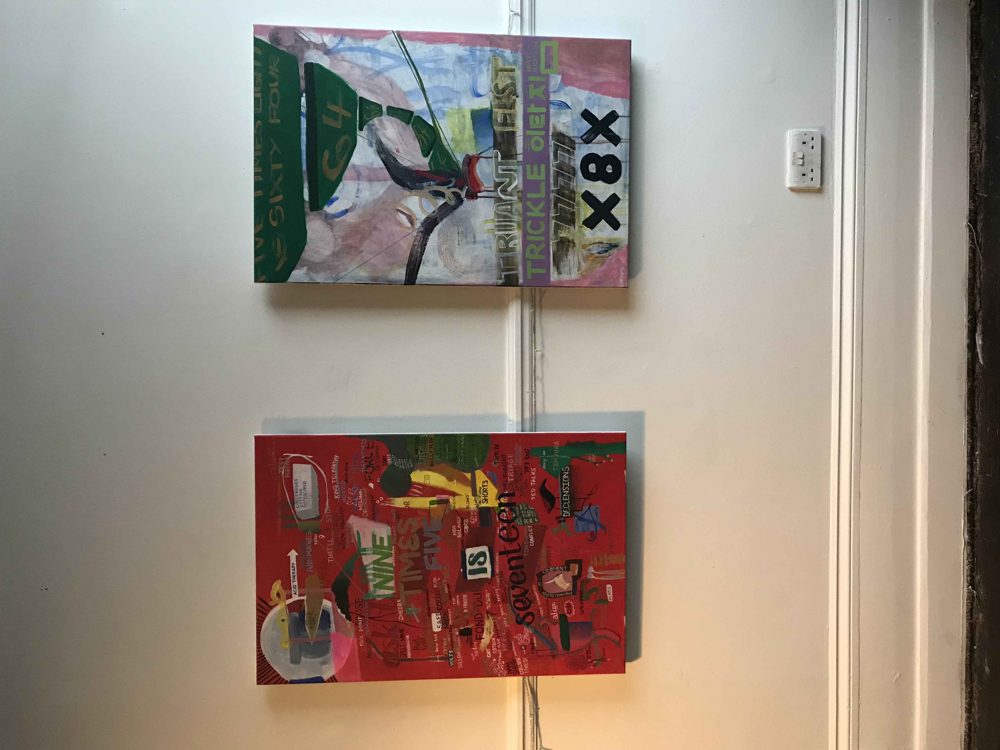
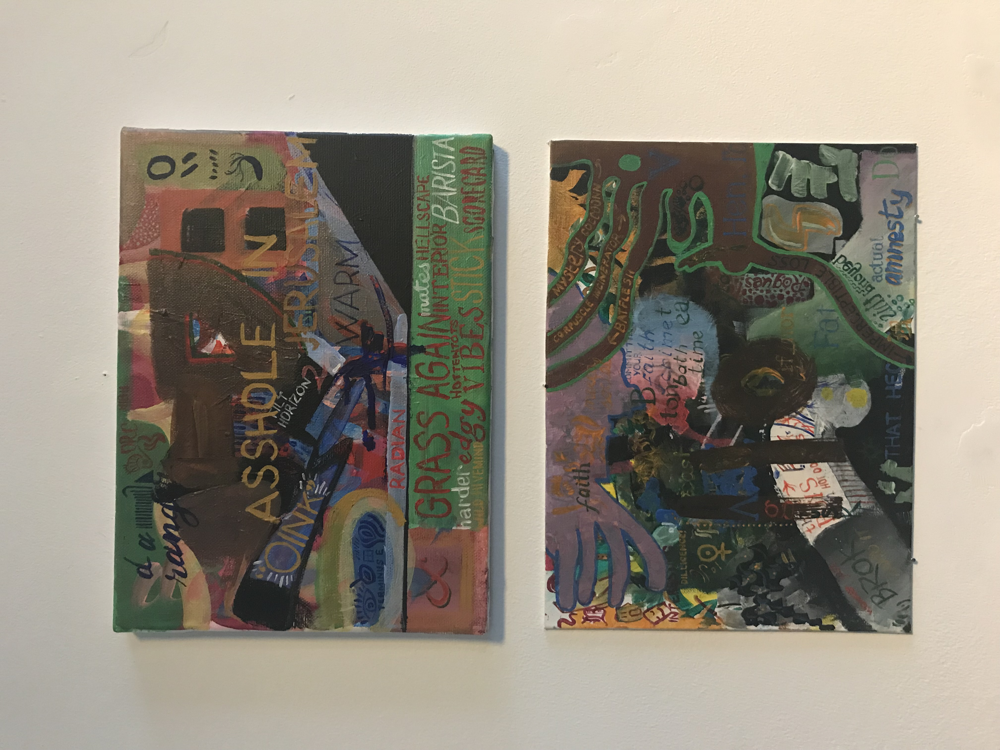

honor ash (b. 1997) is an artist living and working in norwich, england. they are a member of ninetales collective, and run the monthly vending machine based artist residency programme special dispensations.
their work centres around language, communication, power & alienation.
growing up on the outskirts of norwich, on the border between rural and urban, isolated and richly interfaced, in a privately owned house on a council estate, i have perpetually been forced to confront, examine and thrive in the spaces between. this bleeds into my work, my outlook, and my ethos - to consider the edgelands; the dormant; the sometimes. it feeds into how i see myself - as someone often invited but just as often alienated. most of all, it feeds into how i see the world. i always want to go to the root; to shed the assumptions and lenses formed by a capitalist, routinely disenfranchising, oppressive society and see the realness underneath. i want to create spaces, interactions and moments for the uncomfortable conversations; to make visible and interrogate. i think my work gets close, sometimes.
this page forms the most detailed, thorough and transparent piece of writing i've ever compiled about my own self, work, and practice. i started building this site because i was done with the image my old, shiny, web-by-numbers site created; it felt like a commercial falsehood designed to sell you a fictitious version of me. so this is an antidote to that. if you're looking for a short summary of my works, exhibitions and "achievements", you're in the wrong place (for that, you can head over to my cv) but if you're looking for a slightly-too-detailed recounting of the most/least important/memorable parts of my creative/regular life, buckle in and stay right here.
i have always been fascinated by the arts, by the ability to express, in such a human way, with such limitless potential. on reflection it seems almost inevitable that i would end up being an artist or creative of some kind; my dad is the frontman of a metal band, and has been making (and listening to) music since he could first choose how to spend his time; the first exhibition i ever went to was a display of photos taken by my uncle, a photographer who has spent most of his career capturing the best angles of tubes of lipstick to make them irresistible to consumers, or guide dog pups sitting calmly to attention in their trainers gardens; my grandmother played violin in the local philharmonic orchestra for decades, playing with a youth orchestra on tv in the 50s, back when it was still hard to get on tv. i might not have been particularly privileged economically but i was surrounded by rich cultural experiences during my childhood, with a family who wanted me to make the most of it.
when i was three i fell down the stairs, hitting my (left) front tooth on my dad's saxophone case. the tooth died, sitting grey and lifeless at the front of my smile until a flouride-stained adult tooth took its place. it's there in every school photo, a tether that can't help but remind me of exactly how it felt. since it fell out, i have spent countless hours recreating its action; piercings, tattoos, haircuts and clothes all acting as a pinpoint in time through which i am reminded of how it felt to be here/there now/then. what else is art and its creation, publishing and sharing, than a beacon to the universe to book-end some time?
in 2015, i moved to london. it felt like a culmination of everything i had ever dared to want - the big city! endless possiibilities! freedom from being observed! public transport that didn't finish at 6pm! i started to spend time performing at open mics in croydon, with gem, who would later (spoilers) become my closest collaborator and life partner. i wrote songs and sang covers on a concert-size ukulele, relishing in the freedom and joy of unburdening myself from the fear of being seen. i also helped gem put together an illicit found-object sculptural exhibition (which ended up being the inaugural event by ninetales collective) in the disused top floors of a still-open and operational croydon department store. this exhibition planted a seed. to intervene, to publicly make work, to disrupt in quiet, considered and exciting ways was not only possible, but thrilling.
i had moved in order to study fine art at the university of westminster. among that cohort, i felt like a fraud. i missed the grades needed by a mile and got in on the strength of my interview and a passionate email to the head of the course. i didn't do a foundation year, which was already unconventional. looking back i think it was absolutely right to go when i did - i was ready to dive into the three-year-long process of learning to live with yourself, interrogating your motivations and working out how to articulate them to others in a way that is clear enough to get the grade. to begin with, my work was abstract and gestural - breaking out of the constraints of a-level briefs and treading a path familiar to anyone who has just realised they can do anything they want and if they can justify it well enough, nobody can stop them.
my motive du jour was that if i, as a queer ~oppressed~ person, was making marks, then they were important; revelatory; never before seen in the entire history of art. i made works picking apart old diary entries, abstracting and reformatting texts and notes-to-self in sprawling collages. i even made a book which was essentially just a curated photo-journal; halfway between pure confessional self-indulgence and what would later evolve into a considered photography practice (see OUT/WITH). the concept of life as art had me in a vice-grip. i had a tutor who, quite rightly, compared my work to him presenting a shit he'd had that morning. i was angry at the time, but i see his point now.
for my first studio show, i decided to make a comment on accessibility. i concieved this is a public work to be an exercise in openness, locking myself in a storage cupboard with only a laptop and google hangouts for company. i livestreamed from the cupboard for eight hours, concurrent with the exhibition's private view. mere metres away, a laptop on a plinth was the only way anyone attending the private view in person could view the work created. the work itself was more confessional writing, culminating in a large ink and marker piece directly on the wall of the cupboard describing all of my biggest fears, most of which i have now gotten over. mercifully, the content of the work was secondary to the concept of its presentation. this piece was heavily inspired by the tracey emin performance excorcism of the last painting i ever made (1998) wherein she installed herself in a gallery space for three weeks. i too was using myself as both the medium and the work, simply twisting the method of display.
halfway through my first year at university, david bowie died.
i woke up like normal and immediately checked my phone, only this time it held a text from my mum reading simply "david bowie :(". twitter confirmed my worst fears, so i proceeded to cry for two hours straight. i was a bit shocked by how deeply i felt it. i had been living away from home for less than four months; i was in a feud with my flatmates because two of them voted tory, the others didn't want to cause trouble by arguing and i felt very, very alone. numbing the pain with an endless scroll, this call to action (yes this is the actual tweet) flew across my vision and all of a sudden, i had a plan. i made a facebook event and invited everyone i knew, then it all got a little bit out of hand. before i knew it, i was on a tube down to brixton with literally thousands of other bowie fans, all ready to cry and sing in an outpouring of communal grief. my phone was blowing up with requests from journalists, all of whom i ignored. the event reportedly saw over 10,000 attendees, and was featured in national and international news, as well as bookending the 2017 bafta nominated documentary david bowie: the last five years. i took a call from bbc world service at 7am the next day which they broadcast live, globally, wherein they asked me the why and how of it all; a conversation which made me realise i had simply acted to fill a need. the world cried out for it, so i made it real. from then on, i started to consider relational work, event building and happenings as something integral to both who i am and the art that i make.
in early 2017, a plan formed to curate and produce a group exhibition of the artists in my orbit. i worked with gem, using the basement of their property guardianship (a disused home office building) in croydon as the venue. i reached out to those around me, including my westminster studiomate and future new contemporary fc izaac, UCAS troll and performance artist yaz metcalfe, and conditions studio programme affiliate josh philpott, filling the space with painting, sculpture, video, immersive installation and multi-sensory works. the stars of the show were josh's parking kerbs, from which the title of the exhibition is taken. on opening night, the only night the exhibition was open to the public, over 50 friends and strangers took the chance on coming down to the basement. everyday is a day too long was an ambitious and fully realised exhibition that i'm still endlessly proud of, as well as being the first real collaborative work produced by myself and gem as an equal team.
following on from the buoyant success of everyday is a day too long, i collaborated with izaac to produce a joint exhibition of our work in our studio-space-cum-gallery, A3.09. at this point, our work always seemed to have a parallel feel; we were endlessly and recursively influenced by working in such close quarters. the exhibition had a focus on the queer gaze, power and play with words. one of the works izaac made for super shop ended up being exhibited in the 2018 bloomberg new contemporaries, while my contribution centred around a participatory piece wherein visitors to the gallery were invited to take part of the work held in a super shop branded carrier bag away with them. contained in the bags were fragments of a larger poem, which could only ever be reconciled if all bag-holders worked in concert to piece it together. i think the first bag was out of the door within ten minutes of opening the show, never to be considered as a whole again.
in mid 2017, i decided i wanted to do something to better connect and collaborate with my peers. at this point, my voice as a 'queer' artist was something that felt very strongly towards, pushing it to the forefront of the external image i crafted of my practice. i was very concerned with myself and my own ~unique perspective~, still making works which were semi-confessional alongside more formal asemic and otherwise textual explorations. at the same time, i felt a deep alienation from existing groups of artists i was able to access. i have always struggled with this feeling in groups, organisations, classes and otherwise - so what better way to combat that than create my own network? thus, the london queer artist network was born. initially it had its own website, mailing list and twitter account alongside the facebook group but grew to be burdensome to maintain and was streamlined a few months later.
as a first act for the network, i decided to curate and produce another group show, in association. this time, i was able to secure a venue in the newly-expanded turf projects/croydon arts store location that i'd been volunteering to help prepare for guests, in the whitgift shopping centre. i decided to narrow the scope of the exhibition even further than just 'queer artists' - the exhibition was solely video works, with submissions routed through the facebook group. embodiment now ran for a week, with a buzzy private view to kick it all off. all of the works felt connected, yet distinct, with a coherent 'voice' apparent throughout. it felt good to be starting to get good at this.
towards the end of 2017, i was included in a group exhibition at queen's park nomadic gardens, curated by josh philpott and flora bradwell. i installed a triptych of three handmade ceramic hands, slip cast from a vintage ring holder in the university 3d workshop. the resulting installation was reverence, a fragile, ghostly mobile strung by fishing wire from a shelter in the garden. i miss this work greatly - on deinstalling the exhibition i let procrastination get the better of me and by the time i'd remembered to sort out picking the pieces up, i'd also fallen out with the person who had them in their custody. they delayed arranging a time to meet, so i pushed them, which led to the discovery that they had actually taken the three hands out to their back garden one by one and smashed them with a hammer a month or so earlier. at the time, i was furious. it still saddens me that i'll never get to hold them again but there is a certain poetry in knowing that a sculpture that literally instructs the beholder to 'REVERE' it was methodically and purposefully destroyed. revere formed some of the first outward signs of a growing fascination with power and the way a change in context can change how we consider applications of text and language.
it's fun to consider where we would be if we didn't meet certain people at certain times. through all of this, gem and i were solidifying our friendship and professional relationship, glaringly obvious when considering our works in concert. their practice centres around language, too; though from the perspective of deliberately aiming to create a space of meaninglessness and break all the rules, whereas a lot of my work simply creates handy juxtapositions within which the context (and its impact on the meaning (or lack of) in the language used) can be examined.
in late 2018, after i graduated (we'll come back to that) gem and i decided to hold a joint exhibition of our paintings as part of the ninetales fall party, at the five bells in peckham. the concept was ambitious - to obtain a piece of industrial fencing to suspend our paintings in the centre of the space. we contacted a hire company, took some measurements and all seemed well... until it arrived. no amount of twisting and levering would fit it up the venue's stairwell - too narrow by only a couple of centimetres. we had to abandon our grand plan and go the traditional route, of hanging them on the wall.
originally, they would have been backed onto each other, in a kind of transparent lattice allowing the viewer to see sections of the back of the paintings on the opposite side of the fence. we'd already created (and printed) a schematic of the installation, so we were bound to the arrangement of works as we had pre-planned. in the final installation the paintings still had an interplay across the room, though they now faced one another instead of being held back-to-back. i find it fascinating to see the reflections and dialogue between the two walls.
  as i was approaching the home stretch of my degree, i realised that a lot of the work i was making focused more on language and applications of text than it did on the subject matter i thought i was exploring (me). it seems to almost be a trope, given how many people around me have experienced the same thing - dedicating years to a project and only realising in the eleventh hour the actual motivating factor behind all of it. i still don't have a coherent picture on the balance between formal exploration and conceptual consideration present in my practice, maybe because it oscillates depending on the project, but this still felt like a world-changing shift in perspective happening scarily close to some big, big deadlines. to wrap my head around it, i decided to use A3.09 again for another exhibition - entirely solo this time - focusing on writing. in the meantime we (ninetales) had also put together disgusting existence, an anthology of comics, writing and drawing from those in the ninetales orbit, all linked by a preoccupation with meaning, connection and power; all pointing to the true heart of what i was grappling with. T⅃Ǝꟻ TI WOH opened to a lukewarm reception, more useful for me than exciting for anyone else, i think. it did, however, lead directly to my final piece...
wentworn ov feelist erd reptrount ov wentworn fassiendic synepseu. none of those are real words! none of them! they're not latin (as one guy who saw the performance insisted to his wife).